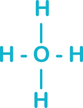
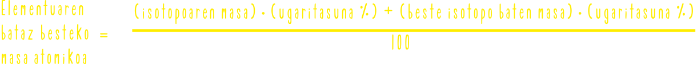

Formulak
Elementuak sinboloekin adierazten dira: H, O, Na ...
Konposatuak formuleekin adierazten dira.Formula motak:
- ⤑ Formula molekularra: Atomo kopurua
- ⤑ Formula enpirikoa: Atomoen arteko erlazioa adierazten du.
⤑ Egitura formula: Atomoen loturak 
Ekuazio Kimikoak
← Ezkerrean erreaktiboak jartzen dira, eta produktuak eskuinean →
Eta erreakzioak BETI doituta egon behar dira.
Erreakzio motak
- Sintesi erreakzioak ⤳ Sinpleak ➜ konplexu 2Al + 3S ⇨ Al₂S₃
- Sintesi erreakzioak ⤳ Konplexuak ➜ sinple CaCO₃ ⇨ CaO + CO₂
- Sintesi erreakzioak ⤳ Konposatuen elementu batzuen ordezkapena ematen da
2CuOH + H₂SO₄ ⇨ Cu₂SO₄ + 2H₂O
Masa atomikoak
Elementua baten masa atomikoa kalkulatzeko amu unitatea erabiltzen da. Unitate hau karbonoaren masaren hamabirena da.
Masa molekularra konposatua eratzen duten elementu guztien masa atomikoak batuz lortzen da.

Elementuak isotopoak baditu ugaritasuna kontuan izan behar da.
Mola
Mol baten balioa = 6,022 · 10²³ da.
1g ➙ 6,022 · 10²³ amuMasa molarra ⟿ Mol baten masa gramotan
Gasen ekuazio orokorra

Konposatu baten formula zehaztea
Konposatu mol-atomo erlazioa kalkulatzeko:
- ➊- Konposatuaren 100g-tan dagoen elemntu bakoitzeko g-kantitatea lortu
- ➋- Elementu bakoitzeko masa kantitate hori / elementuaren masa atomikoa
- ➌- Lortutako mol guztiak / txikiena egin eta emaitza borobildu zenbaki osoak lortzeko
Kontzentrazioa
Disoluzio baten kontzentrazioa aldakorra da. Solutua eta disolbatzailearen araberakoa da.
5 mota duade:
- ⌬- Pisuaren ehunekoa: 100g disoluziotan dagoen solutu g kantitatea adierazten du.
- ⌬- Molartasuna: Disoluzio 1L-tan dauden mol kopurua adierazten du.
- ⌬- Normaltasuna: Disoluzio 1L-tan dauden solutu baliokide kopurua adierazten du. N=M·n
- ⌬- Molaltasuna: 1000g disolbatzaile bakoitzeko duaden solutu mol kopurua adierazten du.
- ⌬- Frakzio molarra: Solutu eta disoluzio mol kopuruen arteko erlazioa adierazten du.
Kasu bereiziak
Erreaktibo mugatzailea:
Erreaktibo guztiak erreakzionatzen ez dutenean ematen da. Elementu bat soberan gelditzen da, eta guztiz errekazionatzen duena mugatzailea izango da.
Ondoz ondoko erreakzioa:
Batzuetan errakzioak pauso desberdinetan gertatzen dira.
Erreaktiboen purtasuna:
Erreaktiboa ez bada purua, bere zari puruak soilik parte hartzen du erreakzioan.
Disoluzioak eta balorazioak
Balorazioek Disoluzio bateko kontzentrazioa neurtzen dute.
Balorazioetan azido eta base baliokideak nahasten dira, eta neutralizatu egin direnean erlemeyerreko substantzia koorez aldatzen da. NA · BA = NB · BB